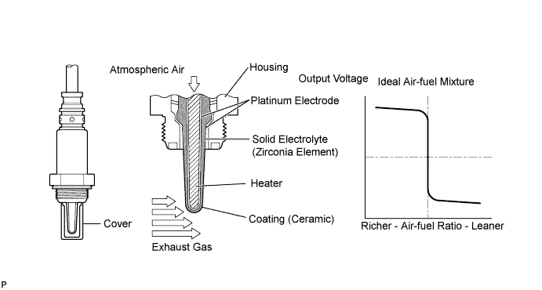
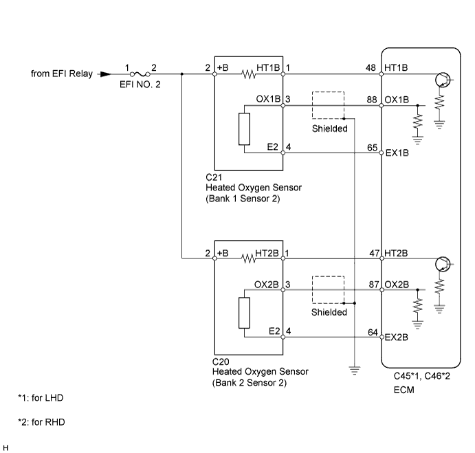
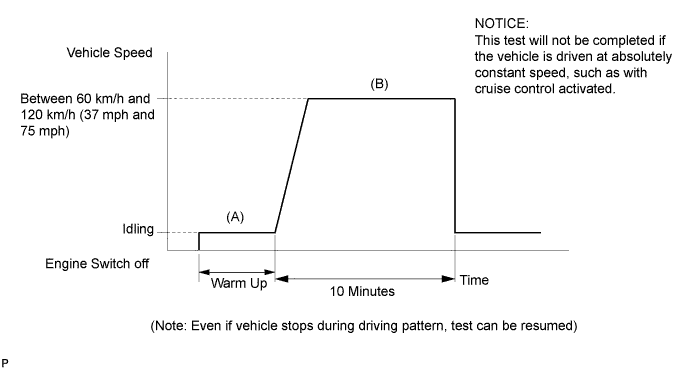
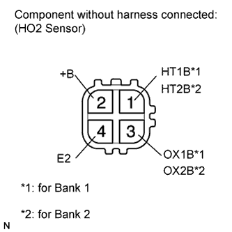
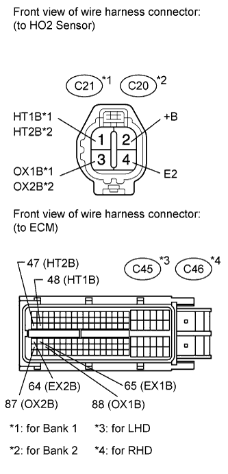
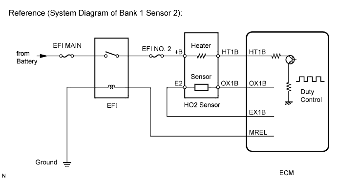

DTC P0137 Oxygen Sensor Circuit Low Voltage (Bank 1 Sensor 2) |
DTC P0157 Oxygen Sensor Circuit Low Voltage (Bank 2 Sensor 2) |

| DTC Code | DTC Detection Condition | Trouble Area |
| P0137 | The Heated Oxygen (HO2) sensor voltage is below 0.21 V when the air-fuel ratio is rich (2 trip detection logic). |
|
| P0157 |
|


| Tester Display (Sensor) | Injection Volume | Status | Voltage |
| AFS B1 S1 (A/F) | +25% | Rich | Below 3.0 V |
| AFS B1 S1 (A/F) | -12.5% | Lean | Higher than 3.35 V |
| O2S B1 S2 (HO2) | +25% | Rich | Higher than 0.55 V |
| O2S B1 S2 (HO2) | -12.5% | Lean | Below 0.4 V |
| Case | A/F Sensor (Sensor 1) Output Voltage | HO2 Sensor (Sensor 2) Output Voltage | Main Suspected Trouble Area |
| 1 |   |  | - |
| 2 |  | |
|
| 3 | | |
|
| 4 | | |
|
| 1.CHECK ANY OTHER DTCS OUTPUT (IN ADDITION TO DTC P0137 AND P0157) |
Connect the intelligent tester to the DLC3.
Turn the engine switch on (IG) and turn the tester on.
Enter the following menus: Powertrain / Engine and ECT / DTC.
Read the DTCs.
| Result | Proceed to |
| P0137 or P0157 | A |
| P0137 or P0157, and other DTCs | B |
|
| ||||
| A | |
| 2.CHECK FOR EXHAUST GAS LEAK |
Check for exhaust gas leaks.
|
| ||||
| OK | |
| 3.INSPECT HEATED OXYGEN SENSOR (HEATER RESISTANCE) |
 |
Disconnect the heated oxygen (HO2) sensor connector.
Measure the resistance according to the value(s) in the table below.
| Tester Connection | Condition | Specified Condition |
| 1 (HT1B) - 2 (+B) | 20°C (68°F) | 11 to 16 Ω |
| 1 (HT1B) - 4 (E2) | Always | 10 kΩ or higher |
| Tester Connection | Condition | Specified Condition |
| 1 (HT2B) - 2 (+B) | 20°C (68°F) | 11 to 16 Ω |
| 1 (HT2B) - 4 (E2) | Always | 10 kΩ or higher |
|
| ||||
| OK | |
| 4.CHECK HARNESS AND CONNECTOR (HEATED OXYGEN SENSOR - ECM) |
  |
Disconnect the HO2 sensor connector.
Measure the voltage according to the value(s) in the table below.
| Tester Connection | Switch Condition | Specified Condition |
| +B (C21-2) - Body ground | Engine switch on (IG) | 11 to 14 V |
| +B (C20-2) - Body ground |
Turn the engine switch off.
Disconnect the ECM connectors.
Measure the resistance according to the value(s) in the table below.
| Tester Connection | Condition | Specified Condition |
| HT1B (C21-1) - HT1B (C45-48) | Always | Below 1 Ω |
| OX1B (C21-3) - OX1B (C45-88) | ||
| E2 (C21-4) - OX1B (C45-88) | ||
| HT2B (C20-1) - HT2B (C45-47) | ||
| OX2B (C20-3) - OX2B (C45-87) | ||
| E2 (C20-4) - EX2B (C45-64) |
| Tester Connection | Condition | Specified Condition |
| HT1B (C21-1) - HT1B (C46-48) | Always | Below 1 Ω |
| OX1B (C21-3) - OX1B (C46-88) | ||
| E2 (C21-4) - OX1B (C46-88) | ||
| HT2B (C20-1) - HT2B (C46-47) | ||
| OX2B (C20-3) - OX2B (C46-87) | ||
| E2 (C20-4) - EX2B (C46-64) |
| Tester Connection | Condition | Specified Condition |
| HT1B (C21-1) or HT1B (C45-48) - Body ground | Always | 10 kΩ or higher |
| OX1B (C21-3) or OX1B (C45-88) - Body ground | ||
| HT2B (C20-1) or HT2B (C45-47) - Body ground | ||
| OX2B (C20-3) or OX2B (C45-87) - Body ground |
| Tester Connection | Condition | Specified Condition |
| HT1B (C21-1) or HT1B (C46-48) - Body ground | Always | 10 kΩ or higher |
| OX1B (C21-3) or OX1B (C46-88) - Body ground | ||
| HT2B (C20-1) or HT2B (C46-47) - Body ground | ||
| OX2B (C20-3) or OX2B (C46-87) - Body ground |
|
| ||||
| OK | |
| 5.REPLACE HEATED OXYGEN SENSOR |
Replace the heated oxygen sensor (Click here).
| NEXT | |
| 6.PERFORM CONFIRMATION DRIVING PATTERN |
| NEXT | |
| 7.CHECK WHETHER DTC OUTPUT RECURS (DTC P0137 OR P0157) |
Connect the intelligent tester to the DLC3.
Turn the engine switch on (IG).
Turn the tester on.
Enter the following menus: Powertrain / Engine and ECT / Utility / All Readiness.
Input DTCs: P0137 and P0157.
Check that the DTC Monitor is "NORMAL." If the DTC Monitor is "INCOMPLETE," perform the drive pattern adding the vehicle speed and using second gear to decelerate the vehicle.
| Result | Proceed to |
| NORMAL (No DTC output) | A |
| ABNORMAL (P0137 or P0157 output) | B |
|
| ||||
| A | ||
| ||